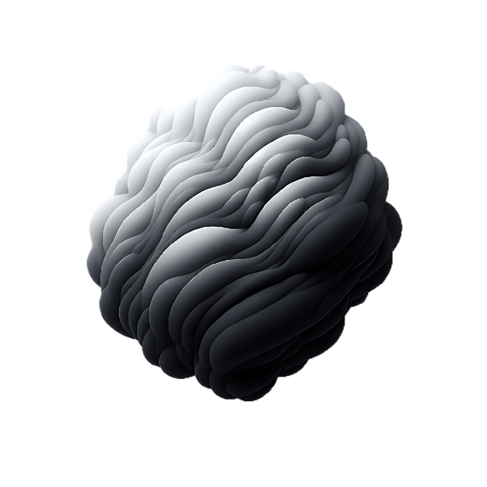

Teknoloji alanındaki yolculuğum kod yazmanın, yeni teknolojileri keşfetmenin yanında veriyi anlamlandırmak ve yapay zekânın sunduğu olanakları keşfetmekle şekilleniyor.
Özellikle veri analitiği ve yapay zekâ alanlarına büyük ilgi duyuyorum. Edindiğim bilgileri, gerçek hayattaki problemlere sürdürülebilir çözümler üretmek ve fikirlerimi somutlaştırmak için kullanmaya gayret ediyorum.
Yolculuğumu ve neler yaptığımı görmek isterseniz sayfamı inceleyebilirsiniz.

Bilgisayar Mühendisliği
Başta bankalar ve holdingler olmak üzere, 2026 Avrupa Yeşil Mutabakatı (CBAM) gibi ESG regülasyonlarına uyum sağlaması gereken kurumlar için tasarlanan bu çözüm, dijital sistemlerde enerji verimliliğini artırmayı ve kurumların sürdürülebilirlik hedeflerine katkı sunmayı amaçlamaktadır.
P2P Yapay Zekâ ve Teknoloji Akademisi Veri Bilimi Challenge sürecinde geliştirilen, telekom sektöründe müşteri kaybını (churn) makine öğrenmesi modelleriyle tahminlemeyi amaçlayan uçtan uca bir projedir.
Vanilla JS SPA mimarisi ve PHP backend ile geliştirilen, Leaflet harita ve rota çizim desteğine sahip, uçtan uca bir yolculuk paylaşım platformudur.
Veritabanı Yönetimi dersi kapsamında, ASP.NET Core Web API, React (Vite) ve SQL Server kullanılarak geliştirilen; canlı kapasite analizi, interaktif harita ve yapay zeka destekli planlama gerçekleştirebilen uçtan uca bir Akıllı Liman Operasyon Yönetim Sistemidir.
Yapay zeka dünyasindeki temel kavramlar ve geleceğe dair öngörüler bu bölümde yer almaktadır.
Devamını OkuBüyük veri işleme, veri görselleştirme ve analitik yöntemlerin dünyasını keşfedin.
Devamını OkuEn son web trendleri, araçları ve modern yazılım mimarilerine dair detaylı incelemeler.
Devamını OkuYapay zeka alanında teorik ve uygulamalı eğitimler aldığım bir gelişim programına aktif olarak devam ediyorum. Odak noktam veri bilimi olmakla birlikte; girişimcilik, inovasyon ve proje yönetimi konularında da kendimi geliştiriyorum. Eğitim sürecimde katıldığım takım çalışmaları ve ideathon'lar sayesinde çeşitli projeler üretiyor; problem çözme, veri analizi, sunum ve raporlama gibi becerilerimi güçlendiriyorum.
HSD Robotik ve Otomasyon ekibinde yer aldığım dönemde; çevre, energy ve afet teknolojileri alanlarında yenilikçi projeler geliştirdik. Ekipçe geliştirdiğimiz “Taşınabilir Vinç” projesiyle TEKNOFEST 2025'te yarı finalist olma gururunu yaşadık. Bu rekabetçi süreç bana sadece teknik araştırma yetkinliği katmakla kalmadı; aynı zamanda fikir geliştirme, proje yönetimi, teknik rapor hazırlama ve sonuçları sahnede etkili bir şekilde ifade etme konularında ciddi bir pratik sağladı.
Womentum Eğitim Programı, farklı disiplinlerden konuları kapsayan ve kişisel ile profesyonel gelişimime katkı sağlayan bir öğrenme süreci oldu. Program kapsamında Öğrenme Aşkı, Sürdürülebilir Kalkınma Amaçları, İşe Alım Hikayesi, Enerjiyi Okuma Sanatı, Yenilenebilir Energy ve Yeni Energy Teknolojileri, Yapay Zekâ ve Dijital Dönüşüm ile Finansçı Olmayanlar İçin Finans gibi alanlarda eğitimler alarak hem sürdürülebilirlik hem de teknoloji ve iş dünyası konularında bakış açımı geliştirme fırsatı buldum.
DenizBank – Denizaşırı Online Staj Programı, bankacılığın farklı birimlerini yakından tanıma fırsatı bulduğum; blockchain, Excel ve veri alanlarında eğitimler alarak teknik bilgilerimi geliştirdiğim aynı zamanda farklı katılımcılar ve uzmanlarla iletişim kurarak değerli bir profesyonel ağ (network) oluşturduğum verimli bir öğrenme süreci oldu.